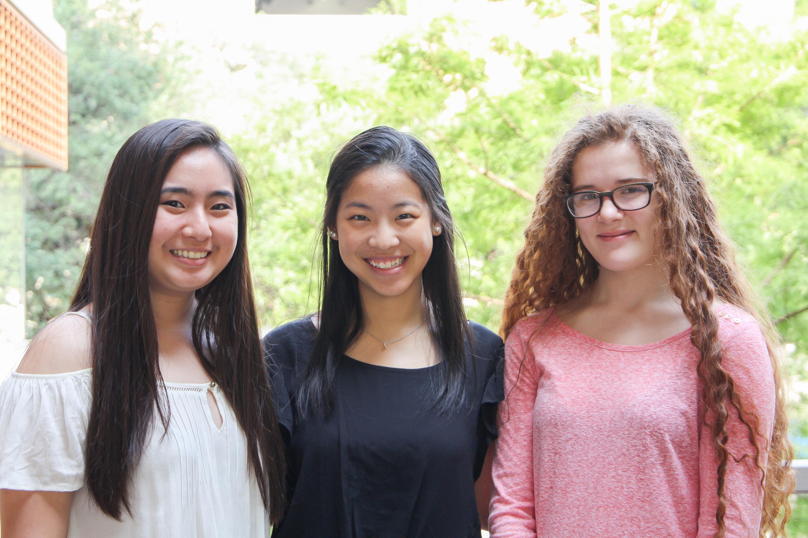

My name is Catherine Fang, and love to volunteer in my free time, but sometimes I find it difficult to find the perfect place to help out at. This is why we decided to make an open forum for people to discuss their experiences at different volunteer locations: it allows everyone to learn which organizations are the best fit for their interests. I firmly believe that by creating a website dedicated to exposing people to the countless ways that they can impact their community, more people will take the initiative to serve others.
My name is Megan Sng, and I am so excited to present YouServe, our final project for Girls Who Code 2018! It has been such an incredible journey and I am very proud of what we have accomplished. Volunteering has always been a huge part of my life and it has made me who I am today, which is why I wanted to make it accessible and enjoyable for everyone. I truly believe that giving back and serving those around you makes the world a better place and by creating YouServe, we are making volunteering both gratifying and useful for all parties involved.
My name is Isabelle, and I’m excited to present our project for Girls Who Code 2018 Summer Immersion Program. I want to start serving my community, but I don’t know how I can get involved. Keeping track of my service seems like an overwhelming task. I know that if I can solve these issues, then I will be doing community service in no time. That’s why I decided to create this platform, to help people have a more convenient experience when starting. If learning about and keeping track of service can be easy, more people will get involved.